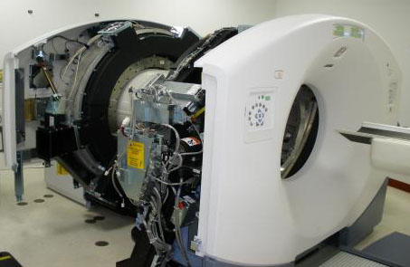
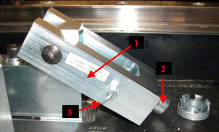
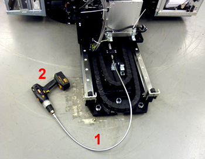

Operating Documentation
Direction 5193574-800, Rev# 22
LightSpeed 7.X Service Methods
Module Version 2.0, Version Date 3/25/11
Operating Documentation |
| Required Persons | Preliminary Reqs | Procedure | Finalization |
|---|---|---|---|
| 1 |
This procedure explains how to move the PET Gantry to the service position and back to the scan position. Perform the appropriate procedure section as needed.
| Last Revised on: | 22 March 2011 |
Illustration 1: PET Gantry and Trailer Retracted for Servicing

| Item | Qty | Effectivity | Part# | Manufacturer | |
|---|---|---|---|---|---|
| Electric Drill | 1 | - | - | - | |
| Hex Wrench | 1 | - | - | - | |
| ||||
| Follow ALL required safety and PPE procedures customary for your organization, when working on this product. | ||||
| Condition | Reference | Effectivity |
|---|---|---|
System shutdown and power removed. | - | - |
Remove covers as needed. If needed, refer to covers remove/install procedure.
Loosen the PET Gantry Interlock bolt (2) below the micro switch, then pull the Spring Latch (3) on the side of the PET Gantry Interlock so that the block (1) drops down. Repeat this for the interlock on the other side of the gantry. See Illustration 2
Illustration 2: The Mechanical Lock Block and the Spring Loaded Lock

| Number | Description |
| 1 | PET Gantry Interlock |
| 2 | PET Gantry Interlock Bolt |
| 3 | Spring Latch |
| ||||
| Verify that no cables or covers are caught when the PET Gantry is being moved. | ||||
Use an electric drill (2) and flexible drive shaft (1) to separate the PET Gantry from the CT Gantry. Begin drilling slowly to verify the drill is turning the correct way and no cables interfere with the movement of the PET Gantry. See Illustration 3.
Illustration 3: Electric Drill and Flexible Drive Shaft

| Number | Description |
| 1 | Flexible Drive Shaft |
| 2 | Electric Drill |
Stop drilling when the entire PET Gantry is in contact with the rubber stops.
Raise Service Latch up in the Trailer to disengage the position lock.
Use the electric drill to move the PET Gantry back towards the CT gantry.
Stop when the PET Gantry hits the mechanical stops at the CT Gantry.
Pull the Spring Latch out, lift up the PET Gantry Interlock, and tighten the bolt at the end with a hex wrench securing the PET Gantry into place.
No finalization steps.